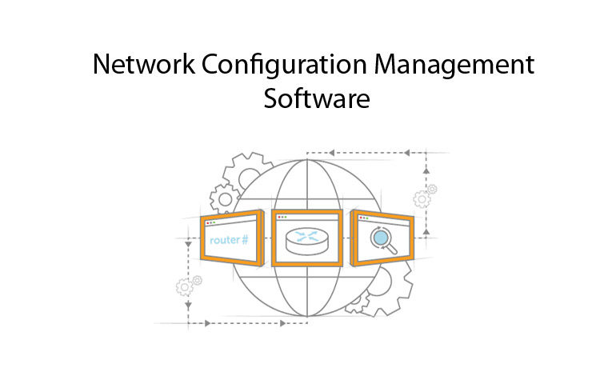

Title Comspec manager
Router comfiguration generator

Router comfiguration generator
About Comspec: Comspect manager is basically used to get some specific kind of Loopback IP addresses and customer and provider end Addresses. Comspect is also use to get some pre-made template of configuration files. that user can fetch and directely upload to the router.
Technologies used: HTML, CSS,javascript, JQuery, PHP and MySQL
Comspect manager is basically based on the cloud based technology web tool that used to get configuration files and other router configuration management.